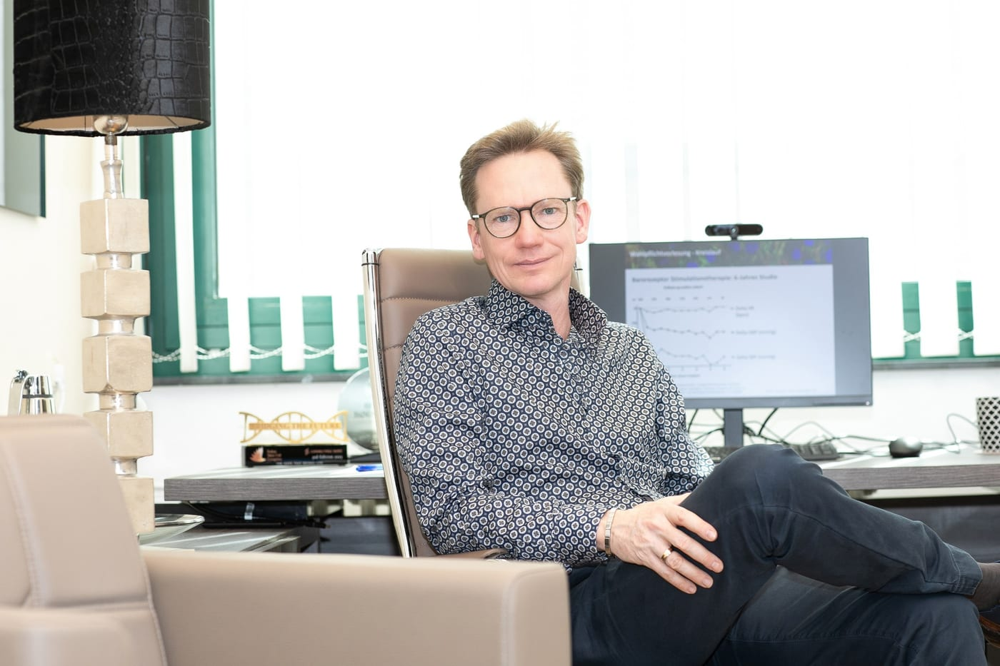
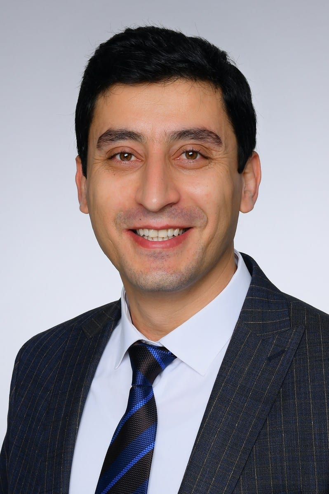
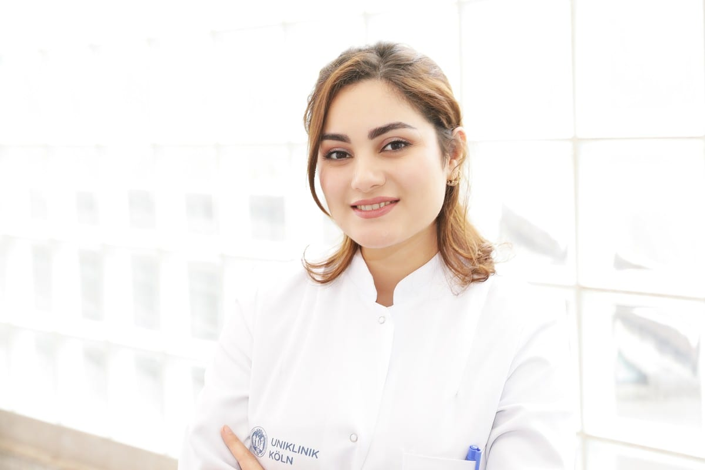
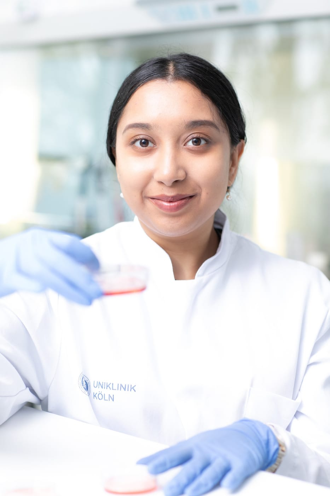
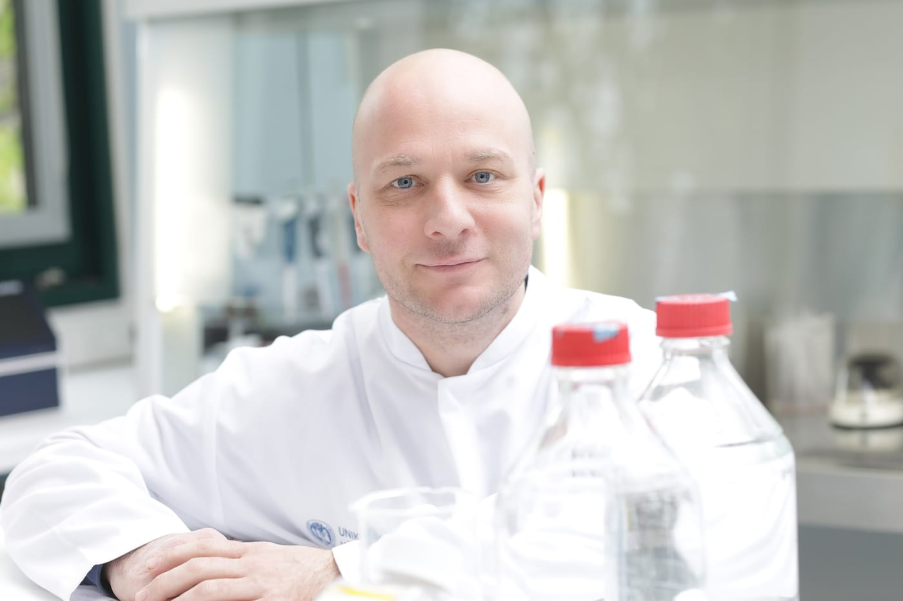

Stem cell biology, cardiac tissue engineering, biomaterials, and translational medicine. The MWB Lab is an international and collaborative training environment for the next generation of cardiac regenerative scientists.

Scalable cardiomyocyte production, cardiac regenerative medicine, and translational validation.

Cardiac organoid and 3D tissue programmes, hydrogel-based culture systems and drug validation.
Dr. Sarkawt Hamad is a scientist specializing in regenerative medicine, with a focus on cardiac tissue engineering, stem cell biology, and translational research. He currently serves as Head of Scientific Development at the MWB-Lab, where he works on developing clinically relevant and scalable approaches in cardiac regeneration.
His research includes hiPSC-derived cardiomyocytes, endothelial cells, cardiac organoids, mesenchymal stem cells, exosome platforms, and cGMP-compliant cell systems. He is particularly interested in translating stem cell-based technologies into reproducible and clinically applicable solutions.
Dr. Hamad has experience in large-animal translational models, AI-driven bioinformatics, and international scientific collaboration. He has supervised MD, MSc, and PhD researchers and actively contributes to advancing regenerative medicine toward clinical and industrial applications.

Professor of Pediatrics, Head of Pediatric Cardiology, University Hospital of Cologne.
Prof. Dr. Konrad Brockmeier is an emeritus Professor of Pediatrics and former Head of Pediatric Cardiology at the University Hospital of Cologne. He earned his medical degree from the Free University of Berlin and completed his training in general pediatrics and pediatric cardiology in Berlin, followed by a European Community research fellowship in Rome. Over his career, he held consultant positions at leading institutions, including Charité Berlin and the University of Heidelberg, before joining Cologne in 2002. As Director of Pediatric Cardiology until 2023, he significantly shaped clinical care and research in the field. He also served on the boards of international societies including ISCE and AEPC.

Foyt Family Professor of Bioengineering, Professor of Chemistry and Materials Science & NanoEngineering, CPRIT Scholar in Cancer Research.
Prof. Dr. Gang Bao is the Foyt Family Professor of Bioengineering at Rice University and a leading pioneer in nanomedicine, molecular imaging, and genome editing. His research focuses on developing advanced biomolecular engineering and nanotechnology approaches for disease diagnosis and therapy, including targeted drug delivery and gene correction using tools such as CRISPR/Cas9. He has made significant contributions to understanding and treating diseases such as cancer and genetic disorders, including sickle cell disease. Prof. Bao has authored over 180 scientific publications, holds multiple patents, and is an elected fellow of several major scientific societies, reflecting his broad impact on bioengineering and translational medicine.

Expert in GMP cell manufacturing.
Dr. Fatma Alhashimi is a stem cell expert, CEO of FSG Lab in Dubai, and Chairperson of the Dubai Stem Cell Congress. She established the UAE’s first GMP-compliant stem cell and molecular laboratory, featuring advanced ISO clean room facilities for stem cell isolation, culture, and banking. With a PhD in Project Management and a background in molecular and medical genetics, she combines scientific expertise with strong leadership in healthcare innovation. Dr. Alhashimi has led pioneering initiatives in cord blood donor recruitment in the UAE and is a certified trainer in project management, change management, and organizational transformation.

Rezwan Firuzi is a PhD researcher at the MWB Lab, University of Cologne, specializing in stem cell biology, cell reprogramming, and regenerative medicine. With a foundation in veterinary science, she investigates the transgene-free production of equine induced pluripotent stem cells (eqiPSCs) as a platform for musculoskeletal regenerative therapies. Her technical expertise spans mRNA transfection, nucleofection, PBMC-based stem cell engineering, hiPSC-derived cardiomyocyte differentiation, and cardiac organoid development. Complementing her experimental work, Rezwan applies advanced bioinformatics pipelines — including single-cell and bulk RNA-seq analysis — to uncover transcriptomic insights in cardiac tissue engineering. Her integrative approach, bridging hands-on laboratory methods with computational biology, positions her at the forefront of translational stem cell research.

My name is Pranjali Bhagat, and I am a B.Tech. graduate in Biotechnology from VIT Vellore, India. I joined the Marga and Walter Boll Laboratory for Cardiac Tissue Engineering at the Medical Faculty of the University of Cologne in early 2025 as part of my Bachelor’s thesis internship, and I’m currently continuing here as a research assistant until June 2026.
My current project focuses on extending the non-cryogenic storage of hiPSC-derived cardiomyocytes by modulating metabolic pathways using small molecules.
Outside the lab, I enjoy getting creative with handicrafts and LEGO, experimenting with baking, and staying active through swimming. These hobbies keep me grounded and bring a nice balance to my work routine.
I’m Ziwei Lu, an MD Candidate at the University of Cologne, specializing in cryopolymer hydrogel and silk fibroin scaffold development for engineered heart tissue in vivo, with a focus on cardiomyocyte maturation, cardiac organoid engineering, and induced pluripotent stem cell (iPSC) technology for cardiac regeneration.
My core research focuses on cryopolymer hydrogel and silk fibroin as biomaterial scaffolds to support the 3D culture, maturation, and in vivo engraftment of cardiomyocytes and cardiac organoids, aiming to advance translational therapies for myocardial repair and cardiovascular regenerative medicine. I have hands-on expertise in iPSC differentiation into cardiomyocytes and laboratory skills.
I’m passionate about bridging biomaterial science, stem cell biology, and clinical cardiovascular medicine.
